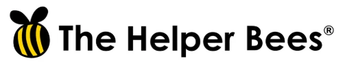
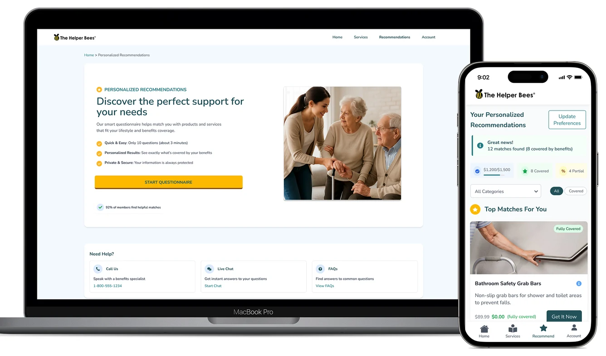
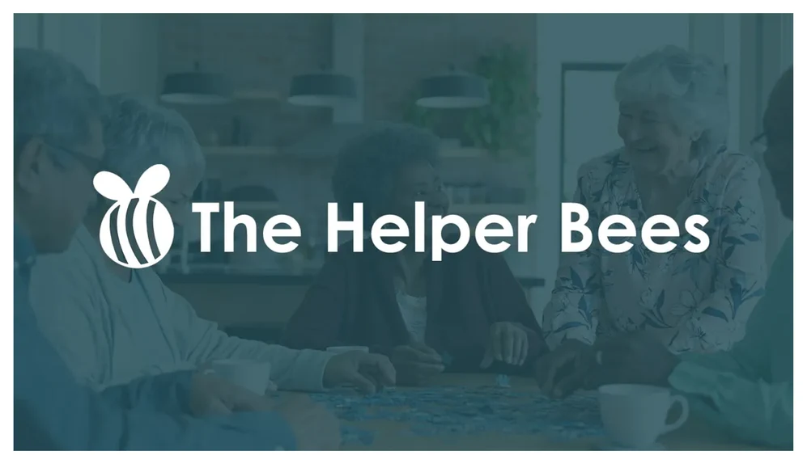
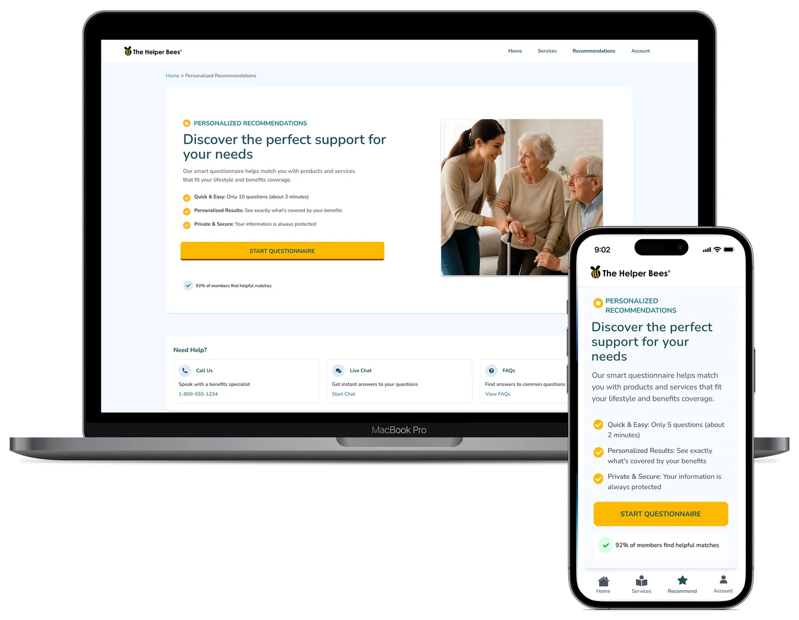
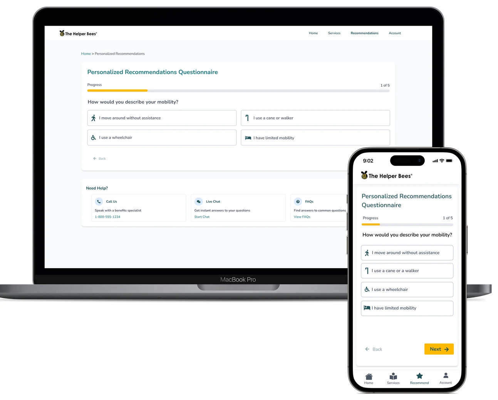
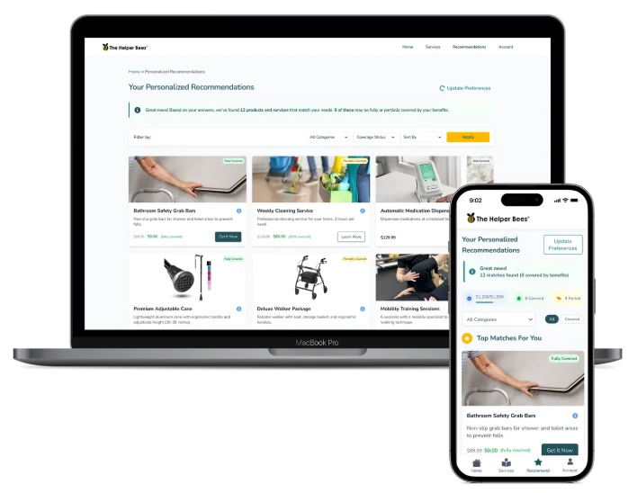

Designing a recommendation experience for aging-in-place products.
“Team, our senior bees can’t find their recommendations once they fly away from the home comb. How do we fix this?”

- Company
- The Helper Bees
- Role
- Lead Product Designer
- Platform
- Responsive web + mobile
- Focus
- Older adults & caregivers, accessibility
The challenge
Older adults and their caregivers couldn’t find their recommended products and services once they left the page.
What I did
Designed the recommendations experience end to end: the invitation, a guided questionnaire, and personalized results.
The result
A calm, three-step journey that builds trust at every step and explains why each recommendation fits.
Background
Why this matters
This isn’t just about building a webpage. It’s about helping older adults and their caregivers find the right support without feeling overwhelmed by technology or decision fatigue.
I designed a Recommendations page for The Helper Bees’ marketplace to help seniors and their caregivers find the right services and products to live independently at home. My perspective comes from working as a medical scribe in a clinic, supporting seniors who had or needed in-home health care. I saw firsthand how access to the right support can transform their daily lives.
So I focused on an experience that feels human, empathetic and easy to navigate: guiding people through the questionnaire, presenting clear personalized recommendations, and building trust at every step.

Before the questionnaire
Invitation
This is the first impression, the moment trust is built or lost. The hero message, “Discover the perfect support for your needs,” works as a friendly invitation, followed by clear, benefit-driven subtext. The page is intentionally uncluttered, guiding people to one clear call to action: Start Questionnaire.
- Warm headline: “Discover the perfect support for your needs.”
- Subtext: “Our smart questionnaire matches you with products and services tailored to your lifestyle and benefits.”
- Trust-building points: Quick & Easy (3 minutes), Personalized Results, Private & Secure.
- Social proof: “92% of members found helpful matches.”
- Large, high-contrast – Start Questionnaire button.
- Always-there “Need Help?” – tab with live chat and phone support.

During the questionnaire
Guided journey
This stage is all about reducing cognitive load. I broke the questionnaire into small, digestible steps, with a progress bar to reassure people they’re moving forward. Helpful hints appear in context, so they never feel like instructions shouting at them.
- Progress feedback: step-by-step navigation with clear labels (“1 of 5”) and a progress bar that stays at the top.
- Accessible input design: large tap targets.
- Encouragement: subtle visuals and icons so the process feels less clinical.

After the questionnaire
Personalized empowerment
Once completed, the Recommendations page delivers a moment of clarity. Seniors and caregivers see tailored suggestions, not just a list, with a short summary of why each one fits their needs. This builds trust and makes the decision easier.
- Warm message: based on your answers, products and services that match your needs.
- Recommendation cards – with large images or icons, coverage badges (Fully Covered, Partially Covered, Not Covered), a short benefit summary and why it was recommended, and clear actions: “Get Now” and “Schedule Service”.
- Filter and sort – by urgency, cost or category.
- Benefits summary – below, for full transparency.
- Update Preferences – to revise answers anytime.

Prototype
Recommendations user flow
The full journey on a phone: the invitation, each questionnaire step, and the personalized results.
More case studies
Healthy HandParaillelGeisingerUT Health X CLITandemNetflix Tudum Case Study